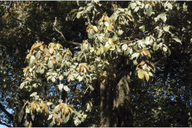
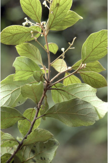
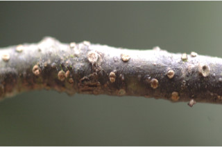
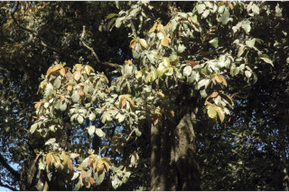
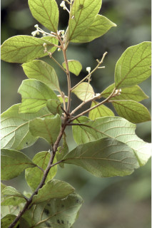
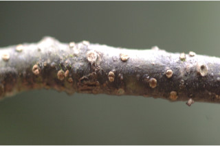
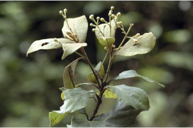
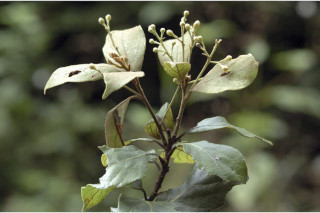

Trees up to 15 m tall.
15 ಮೀ.ವರೆವಿಗೆ ಬೆಳೆಯುವ ಮರಗಳು.
15 മീറ്റര് വരെ ഉയരമുളള മരങ്ങള്.
மரங்கள் 15 மீ. உயரம் வரை வளரக்கூடியது
Branchlets terete, lenticellate, flush fulvous tomentose.
ಕಿರುಕೊಂಬೆಗಳು ದುಂಡಾಗಿದ್ದು ವಾಯುವಿನಿಮಯ ಬೆಂಡು ರಂಧ್ರ ಸಮೇತವಿರುತ್ತವೆ ಹಾಗೂ ನಸುಗೆಂಪಿನಿಂದ ಕೂಡಿದ, ಸಮೃದ್ಧವಾದ ದಟ್ಟ ಮೃದುತುಪ್ಪಳದಿಂದ ಕೂಡಿರುತ್ತವೆ.
ശ്വസനരന്ധ്രങ്ങളുളളതും, കനത്തില് ഫള്വസ് രോമിലവുമായ ഉരുണ്ട ഉപശാഖകള്
சிறிய நுனிக்கிளைகள் குறுக்குவெட்டுத் தோற்றத்தில் வளையமானது, லெண்டிசெல் உடையது, இளம்குருத்து உரோமங்களுடையது.
Leaves simple, alternate, spiral; petiole to 2 cm long, planoconvex in cross section, tomentose; lamina to 6.5-11.5 x 3.5-5.8 cm, generally obovate or sometimes elliptic-oblanceolate, apex acuminate, base cuneate, tomentose beneath at least when young; midrib slightly raised above; secondary_nerves ca. 6 pairs, strong; tertiary_nerves distantly percurrent, strong.
ಎಲೆಗಳು ಸರಳವಾಗಿದ್ದು ಪರ್ಯಾಯ ಮತ್ತು ಸುತ್ತು ಜೋಡನಾ ವ್ಯವಸ್ಥೆಯಲ್ಲಿರುತ್ತವೆ; ತೊಟ್ಟುಗಳು 1 - 2 ಸೆಂ.ಮೀ. ಉದ್ದ ಹೊಂದಿದ್ದು ಅಡ್ಡ ಸೀಳಿದಾಗ ಸಪಾಟ ಪೀನ ಮಧ್ಯದ ಆಕಾರದಲ್ಲಿರುತ್ತವೆ;ಪತ್ರಗಳು 6.5-11.5 X 3.4-9 ಸೆಂ.ಮೀ.ವರೆಗಿನ ಗಾತ್ರ ಹೊಂದಿದ್ದು ಸಾಮಾನ್ಯವಾಗಿ ಬುಗುರಿ ಅಥವಾ ಕೆಲವು ವೇಳೆ ಅಂಡವೃತ್ತ --ಬುಗುರಿ-ಭರ್ಜಿಯ ಆಕಾರ ಹೊಂದಿರುತ್ತವೆ;ಪತ್ರಗಳು ಕ್ರಮೇಣ ಚೂಪಾಗುವ ತುದಿ ಮತ್ತು ಬೆಣೆಯಾಕಾರದ ಎಲೆಯ ಬುಡವನ್ನು ಹೊಂದಿರುತ್ತವೆ ;ಪತ್ರದ ತಳ ಭಾಗ ಕನಿಷ್ಟ ಪಕ್ಷ ಎಳೆಯದಾಗಿರುವಾಗಲಾದರೂ ದಟ್ಟವಾದ ಮೃದು ತುಪ್ಪಳವನ್ನು ಹೊಂದಿರುತ್ತವೆ; ಮಧ್ಯನಾಳ ಪತ್ರದ ಮೇಲ್ಭಾಗದಲ್ಲಿ ಸ್ವಲ್ಪ ಉಬ್ಬಿರುತ್ತದೆ; ಎರಡನೇ ದರ್ಜೆಯ ನಾಳಗಳು ಅಂದಾಜು 6 ಜೋಡಿಗಳಿರುತ್ತವೆ;ಮೂರನೇ ದರ್ಜೆಯ ನಾಳಗಳು ಅಂತರ ಹೊಂದಿದ್ದು ಎಲೆ ದಿಂಡಿಗೆ ಅಡ್ಡವಾಗಿ ಕೂಡುತ್ತವೆ ಮತ್ತು ದೃಢವಾಗಿರುತ್ತವೆ.
ലഘുവായ, ഇലകള് ഏകാന്തരക്രമത്തില് സര്പ്പിളമായടുക്കിയതാണ്; ഛേദത്തില് ഒരു ഭാഗം പരന്നും മറുഭാഗം ഉരുണ്ടുമിരിക്കുന്ന ഘടനയുളള, കനത്ത രോമിലമായ ഇലഞെട്ടിന് 2 സെ.മീ വരെ നീളം; പത്രഫലകത്തിന് 6.5 സെ.മീ തൊട്ട് 11.5 സെ.മീ വരെ നീളവും 3.5 സെ.മീ തൊട്ട് 5.8 സെ.മീ വരെ വീതിയും, ആകൃതി, സാധാരണയായി അപഅണ്ഡാകാരമോ ചിലപ്പോള് ദീര്ഘവൃത്തീയ -അപകുന്താകൃതിയോ ആവാം, പത്രാഗ്രം ദീര്ഘമാണ്, പത്രാധാരം ആപ്പാകാരത്തിലാണ്, കീഴെ, ഇളതായിരിക്കുമ്പോഴെങ്കിലും, കനത്ത രോമിലമാണ്; മുഖ്യസിര മുകളില് ചെറുതായി ഉയര്ന്നതാണ്; ഏതാണ്ട് 6 ജോഡി ദൃഢമായ, ദ്വിതീയ ഞരമ്പുകള്; വിദൂര പെര്കറന്റ് വിധത്തിലുളള ദൃഢമായ ത്രിതീയ ഞരമ്പുകള്.
இலைகள் தனித்தவை, மாற்றுஅடுக்கமானவை, சுழல் போன்று அமைந்தவை; இலைக்காம்பு 2 செ.மீ. நீளமானது, குறுக்குவெட்டுத் தோற்றத்தில் பிளேனோகான்வக்ஸ், உரோமங்களுடையது; இலை அலகு 6.5-11.5 X 3.5-5.8 செ.மீ. பொதுவாக தலைகீழ் முட்டை அல்லது சிலசமயங்களில் நீள்வட்டம்-தலைகீழ் ஈட்டி வடிவானது, அலகின் நுனி அதிக்கூரியது, அலகின் தளம் ஆப்பு வடிவானது, அலகின் பின்புறத்தில் உரோமங்களுடையது; மையநரம்பு அலகின் பரப்பைவிட உயர்ந்தது; இரண்டாம் நிலை நரம்புகள் 6 ஜோடிகள், தெளிவானது; மூன்றாம் நிலை நரம்புகள் அகன்ற பெர்க்கரண்ட், தெளிவானது.
Inflorescence axillary slender panicles, tomentose.
ಪುಷ್ಪಮಂಜರಿ ಅಕ್ಷಾಕಂಕುಳಿನಲ್ಲಿರುವ ತೆಳುವಾಗಿರುವ ಪುನರಾವೃತ್ತಿಯಾಗಿ ಕವಲೊಡೆಯುವ ಮಾದರಿಯಲ್ಲಿರುತ್ತವೆ ಮತ್ತು ದಟ್ಟವಾದ ಮೃದು ತುಪ್ಪಳದಿಂದ ಕೂಡಿರುತ್ತದೆ.
കനത്ത രോമാവൃതമായ പൂങ്കുലകള്, നേര്ത്ത കക്ഷീയ പാനിക്കിളുകളാണ്.
மஞ்சரி இலைக்கோணங்களில் அமைந்த மெல்லிய பேனிக்கிள், உரோமங்களுடையது.
Berry, globose, 1 cm across; seed 1.
ಬೆರ್ರಿ ಗೋಳಾಕಾರದಲ್ಲಿದ್ದು 1 ಸೆಂ.ಮೀ.ಅಡ್ಡಗಳತೆ ಹೊಂದಿರುತ್ತದೆ;ಬೀಜ 1.
ഒറ്റ വിത്തുളള കായ, 1 സെ.മീ കുറുകേയുളള, ഗോളാകാര ബെറിയാണ്.
முழுச்சதைகனி (பெர்ரி), கோளவடிவானது, 1 செ.மீ. குறுக்களவுடையது; விதை ஒன்றுடையது.

 







 
